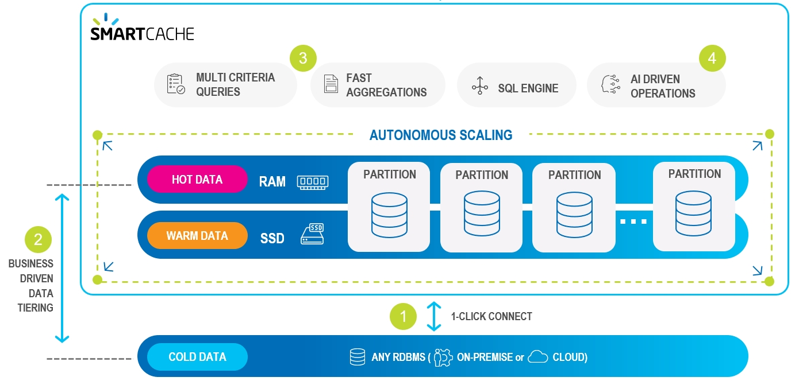
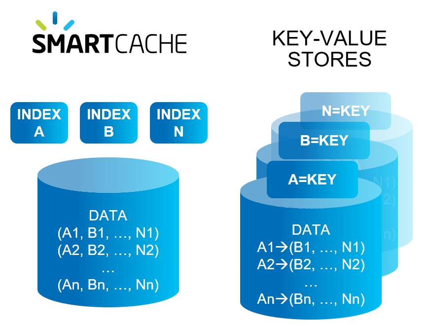
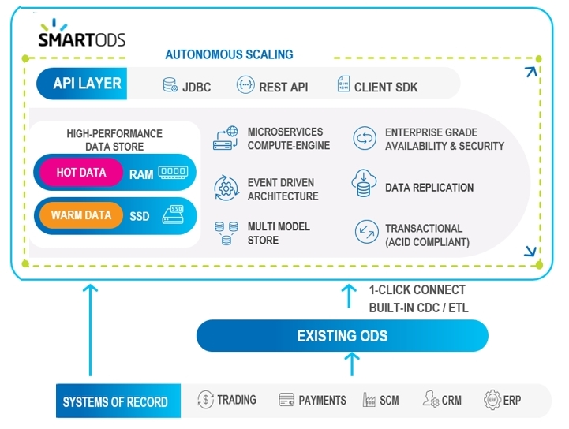

Smart Portfolio meets the following critical design criteria:
Advanced memory management:
High-speed in-memory data store with millisecond-range response time
Compressed RAM footprint
Optimized data co-location for fast Join performance
Loss-less data technologies:
Highly available, always-on data backup
Data persistency with low latency and strong consistency
Atomic, transaction-based processing
Support for complex SQL-99 compliant queries
Enterprise-scale, flexible data management:
Distributed processing partitions, with Wide Area Network support
Automatic, trigger-driven vertical and horizontal scaling
Minimally-invasive installation
SmartCache provides fast, scalable cache from any data store.
SmartODS is an integrated, enterprise-wide data store that allows you to create a new Operational Data Store (Digital Integration Hub) or augment your existing data store.
Smart Augmented Transactions provides translytical processing for fast access, updating and analysis of enterprise-critical information.
SmartCache provides fast, scalable cache from any data store.
The SmartCache environment can be illustrated as follows:

| Item | Description | Technologies |
| One-click connect to any RDBMS, on-premise or cloud, with built-in connectors (read-only or read-write) | Oracle, ....., AWS, Azure | |
| Data is stored in multiple data storage tiers — hot (in-memory), warm (SSD), and cold | RAM, SSD, HD, MemoryXtend | |
| High performance multi-index queries, fast aggregations on large datasets, and high concurrency | SQl-99 | |
| AlOps used for auto-scaling, automated caching policies and smart indexing | ||
| Digital applications connect and trigger SQL or client SDK queries with millisecond performance |
Here are some of the detailed technologies that make SmartCache smart.
SmartCache's Ops Manager GUI provides built-in connectors to the most popular databases:
Database tables can be imported as-is, or can be limited to selected columns and other properties using the Ops Manager GUI, and without writing custom code.
Data can be stored on-prem, in the cloud, or a hybrid combination of cloud and on-prem.
User-defined business rules allows you to place the most important data in "hot" storage (RAM), while other data can be in "warm" (SSD) or "cold" (HD) storage.
"Important" does not necessarily mean "most frequently accessed" — for example, your business rules may place premium customers in hot storage, even if their data is less frequently required.
Unlike simple key-value data stores, SmartCache uses secondary, tertiary, ... n-ary indexes to organize your data.
This means that where a key-value approach would duplicate the entire data store for each defined index, SmartCache allows a virtually unlimited number of indexes to be maintained — with very little RAM or processing overhead.

User-defined rules can automatically scale up/down or scale out/in when system demands change.
For example a rule could state:
When the RAM in use exceeds 80% of the total currently allocated RAM for more than 2 minutes, scale up the RAM by a factor of 4.
Rules can also be time-dependent, for example automatically changing storage allocations before and after Black Friday or other times when unusual transaction volumes may occur.
SmartCache supports the full SQL-99 standard, allowing complex queries to be performed with optimal speed and minimal memory footprint. Custom SDK calls that use standard SQL requests can be handled without requiring source code changes.
SmartODS creates an optimized data store using your existing data store technology, or providing an independent, self-contained solution.
The SmartODS environment can be illustrated as follows:

| Item | Description | Technologies |
| One-click connect to multiple systems of record with real-time and batch integrations | Oracle, ....., AWS, Azure | |
| Connect to Existing ODS, using CDC or standard connectors/ETL | Oracle, ....., AWS, Azure | |
| Data is stored in multiple data storage tiers — hot (in-memory), warm (SSD), and cold | RAM, SSD, HD, MemoryXtend | |
| Enterprise ready designed for 99.999% availability and data replication, and enterprise security | SQl-99 | |
| High performance compute engine with millisecond response time for digital applications | ||
| Event driven architecture - allow applications to subscribe to different event templates | ||
| Unified API layer for all digital applications and operational analytics |
Here are some of the detailed technologies that make SmartODS smart.
SmartODS provides an easy connection to your existing systems of record. This allows SmartODS to use your systems of record as its ODS implementation.
Connecting to an existing ODS adds SmartODS capabilities, in addition to the original ODS features.
SmartCache's Ops Manager GUI provides built-in connectors to the most popular databases:
SmartCache's Ops Manager GUI provides built-in connectors to the most popular databases:
SmartCache's Ops Manager GUI provides built-in connectors to the most popular databases:
SmartCache's Ops Manager GUI provides built-in connectors to the most popular databases:
SmartCache's Ops Manager GUI provides built-in connectors to the most popular databases: